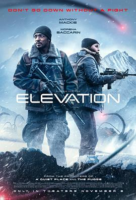

5.1
高处营救
Elevation
2024
美国
评分 5.1
导演:
乔治·诺非
演员:
安东尼·麦凯 / 莫蕾娜·巴卡琳 / 麦蒂·哈森 / Shauna Earp / Danny Boyd Jr. / Kevin Hummel / Dalila Orozco
类型:
动作,惊悚,科幻
剧情简介
在地球生态崩坏、山体塌陷的未来世界，一场意外让大气层发生剧变，暴风携带致命粒子席卷全球。人类被迫在高海拔地区筑起最后的避难区——“高地避城”。这里的生存法则只有一个：绝不能下山。单亲父亲艾萨克（安东尼·麦凯 饰）曾是前救援工程师，如今独自抚养失聪的儿子诺亚，生活在高地避城的边缘地带。一次事故后，诺亚被坠落的运输艇卷走，坠入被称为“坍塌带”的山谷。艾萨克不顾禁令，与幸存者克莱尔（莫蕾娜·巴卡琳 饰）和莉亚（麦蒂·哈森 饰）踏上下山的救援之旅。他们所面对的不仅是恶劣气候和崩坏地形，还有被辐射与病毒混合污染的变异生物。这些“空蚀兽”能以声波感知猎物，外表扭曲、行动迅速。影片节奏紧凑，山体滑落、索道断裂、氧气计量不断下降——营造出窒息般的紧迫感。随着深入山谷，他们发现这场灾难背后隐藏着一场人为实验：曾经的科学家们试图利用“地心能量”逆转全球气候，却打开了另一种生命形态的通道。在高潮段落，艾萨克为了救儿子，与怪物缠斗至山脊边缘。破碎的缆桥、闪烁的闪电、坠落的碎岩构成壮烈的画面。他最终用曾参与设计的高频信号摧毁生物巢穴，却也让山体开始全面崩塌。临近结尾，父子在风暴间重逢——艾萨克将氧气面罩戴在儿子脸上，自己却倒在风雪中，静静望向远方的曙光。影片以硬核灾难与情感救赎并行的方式，呈现“父爱与求生”的主题。高空场景真实紧张，特效展现出山体解构、风暴旋卷的极端视觉冲击。